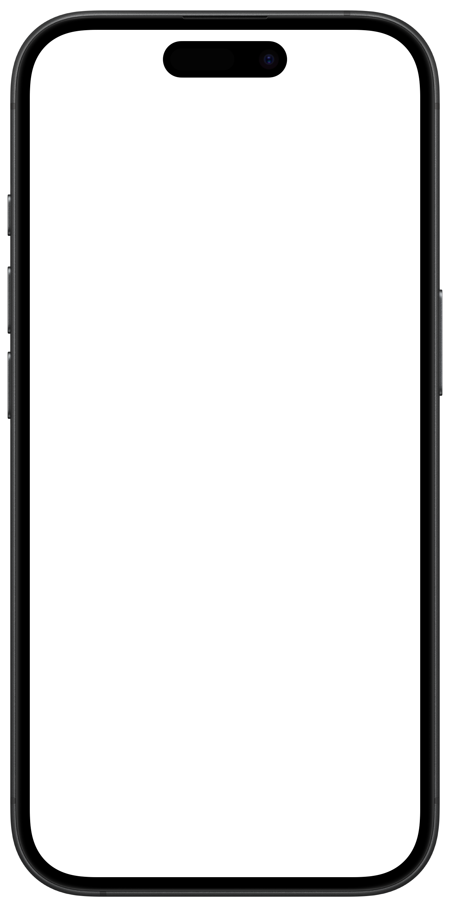

Move freely. Everywhere across 600 locations.
Explore 600+ locations to train, stretch, swim, and recharge.
From workouts and recovery to mindfulness and healthy habits, Fitpass helps you take care of yourself—wherever life takes you.

Explore 600+ locations to train, stretch, swim, and recharge.
Change your routine. Explore gyms, yoga studios, and wellness experiences.
Track progress, follow workouts, and reflect on your journey.
Building a healthy routine doesn't happen overnight.
Fitpass gives you the freedom to choose what works for you today.